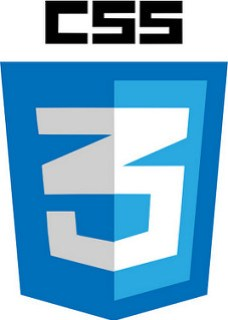

<!DOCTYPE html>
<html lang="en">

<head>

    <meta charset="utf-8">
    <meta name="viewport" content="width=device-width, initial-scale=1, shrink-to-fit=no">
    <meta name="description" content="">
    <meta name="author" content="">

    <title>Dopiz's Website</title>
    <link rel="icon" href="img/favicon.png">

    <!-- Bootstrap -->
    <link href="vendor/bootstrap/css/bootstrap.min.css" rel="stylesheet">
    <script src="vendor/bootstrap/js/bootstrap.bundle.min.js"></script>

    <!-- jQuery -->
    <script src="vendor/jquery/jquery.min.js"></script>
    <script src="vendor/jquery/jquery.easing.min.js"></script>

    <!-- Custom fonts for this template -->
    <link href="https://fonts.googleapis.com/css?family=Saira+Extra+Condensed:500,700" rel="stylesheet">
    <link href="https://fonts.googleapis.com/css?family=Muli:400,400i,800,800i" rel="stylesheet">
    <link rel="stylesheet" href="https://use.fontawesome.com/releases/v5.4.1/css/all.css" integrity="sha384-5sAR7xN1Nv6T6+dT2mhtzEpVJvfS3NScPQTrOxhwjIuvcA67KV2R5Jz6kr4abQsz"
        crossorigin="anonymous">

    <!-- Vue JS-->
    <script src="https://cdn.jsdelivr.net/npm/vue@2.5.17/dist/vue.js"></script>
    <script src="https://unpkg.com/axios/dist/axios.min.js"></script>

    <!-- Custom styles for this template -->
    <link href="css/index.css" rel="stylesheet">

</head>

<body id="page-top">
    <nav class="navbar navbar-expand-lg navbar-dark bg-primary fixed-top" id="sideNav">
        <a class="navbar-brand js-scroll-trigger" href="#page-top">
            <span class="d-block d-lg-none">Ren-Jie Liu</span>
            <span class="d-none d-lg-block">
                
            </span>
        </a>
        <button class="navbar-toggler" type="button" data-toggle="collapse" data-target="#navbarSupportedContent"
            aria-controls="navbarSupportedContent" aria-expanded="false" aria-label="Toggle navigation">
            <span class="navbar-toggler-icon"></span>
        </button>
        <div class="collapse navbar-collapse" id="navbarSupportedContent">
            <ul class="navbar-nav">
                <li class="nav-item">
                    <a class="nav-link js-scroll-trigger" href="#about">About</a>
                </li>
                <li class="nav-item">
                    <a class="nav-link js-scroll-trigger" href="#education">Education</a>
                </li>
                <li class="nav-item">
                    <a class="nav-link js-scroll-trigger" href="#experience">Experience</a>
                </li>
                <li class="nav-item">
                    <a class="nav-link js-scroll-trigger" href="#skills">Skills</a>
                </li>
                <li class="nav-item">
                    <a class="nav-link js-scroll-trigger" href="#future">Future</a>
                </li>
                <li class="nav-item">
                    <a class="nav-link js-scroll-trigger" href="#life">Life</a>
                </li>
            </ul>
        </div>
    </nav>

    <div class="container-fluid p-0">

        <section class="resume-section p-3 p-lg-5 d-flex d-column" id="about">
            <div class="my-auto" style="width: 100%">
                <h1 class="mb-0">
                    Ren-Jie <span class="text-primary">Liu</span>
                </h1>
                <hr>
                <div class="subheading mb-5">
                    <ul class="fa-ul mb-0">
                        <li>
                            <i class="fa-li fa fa-map-marker-alt"></i>
                            Taipei City</li>
                        <li>
                            <i class="fa-li fa fa-mobile-alt"></i>
                            0910-634-861</li>
                        <li>
                            <i class="fa-li fa fa-envelope"></i>
                            <a href="mailto:rjliu0903@gmail.com">rjliu0903@gmail.com</a></li>
                        <li>
                            <i class="fa-li fa fa-graduation-cap"></i>
                            National Taipei University of Technology</li>
                    </ul>
                </div>
                <div class="social-icons" style="float:right;">
                    <a href="https://www.linkedin.com/in/dopiz/">
                        <i class="fab fa-linkedin-in"></i>
                    </a>
                    <a href="https://github.com/Dopiz/">
                        <i class="fab fa-github"></i>
                    </a>
                    <a href="https://www.facebook.com/dopilolz/">
                        <i class="fab fa-facebook-f"></i>
                    </a>
                </div>
            </div>
        </section>

        <hr class="m-0">

        <section class="resume-section p-3 p-lg-5 d-flex flex-column" id="education">
            <div class="my-auto">
                <h2 class="mb-5">Education</h2>
                <hr><br>
                <div class="resume-item d-flex flex-column flex-md-row mb-5">
                    <div class="resume-content mr-auto">
                        <h3 class="mb-0">National Taipei University of Technology</h3>
                        <div class="subheading mb-3">Master | Computer Science and Information Engineering</div>
                        <div>碩士論文「基於深度學習之人聲辨識探討資料集組成與測試準確率之關聯性」</div>
                    </div>
                    <div class="resume-date text-md-right ntut">
                        <span class="text-primary">September 2016 - August 2018</span>
                    </div>
                </div>

                <div class="resume-item d-flex flex-column flex-md-row">
                    <div class="resume-content mr-auto">
                        <h3 class="mb-0">National Formosa University</h3>
                        <div class="subheading mb-3">Bachelor | Computer Science and Information Engineering</div>
                        <div>大學專題「服務學習媒合 志工雲平台」</div>
                    </div>
                    <div class="resume-date text-md-right nfu">
                        <span class="text-primary">September 2012 - June 2016</span>
                    </div>
                </div>
            </div>
        </section>

        <hr class="m-0">

        <section class="resume-section p-3 p-lg-5 d-flex flex-column" id="experience">
            <div class="my-auto">
                <h2 class="mb-5">Experience</h2>
                <hr><br>
                <div class="resume-item d-flex flex-column flex-md-row mb-5">
                    <div class="resume-content mr-auto">
                        <h3 class="mb-0">Relevance Between Dataset Composition and Test Accuracy Base on Deep Learning
                            Algorithm in Voice Detection</h3>
                        <div class="subheading mb-3">「基於深度學習之人聲辨識探討資料集組成與測試準確率之關聯性」</div>
                        <ul style="margin-left: 1%">
                            <li>透過建置數種類神經網路，對已切割的兩秒鐘音樂片段進行有/無人聲的分類判斷。</li>
                            <li>搜集各種公開的音樂資料集，並對音樂片段進行預處理來執行訓練與測試比較。</li>
                            <li>建置類型經網路包含 CNN、CapsNet、ConvLSTM 等。</li>
                        </ul>
                        <br>
                        <p><b>主要使用工具：</b>
                            ・
                            ・
                            </p>
                    </div>
                    <div class="resume-date text-md-right">
                        <span class="text-primary">September 2017 - Augest 2018</span>
                    </div>
                </div>

                <div class="resume-item d-flex flex-column flex-md-row mb-5">
                    <div class="resume-content mr-auto">
                        <h3 class="mb-0">Cloud Testing Platform</h3>
                        <div class="subheading mb-3">「Android 手機相容性測試 雲端測試平台」</div>
                        <ul style="margin-left: 1%">
                            <li>提供使用者上傳不同測試類型的測試腳本及待測手機應用程式，即可使用建置好的數十種實體手機進行自動化的測試、相容性測試。</li>
                            <li>測試類型包含：CTS、Installer、Monkey、RobotFramework、Robtium、UiAutomator Test 等。</li>
                            <li>維護此平台時利用 Robot Framework 及 RIDE 進行驗收測試的 Regression Testing。</li>
                            <li>並且透過 Jenkins 來進行持續整合。</li>
                        </ul>
                        <br>
                        <p><b>主要使用工具：</b>
                            ・
                            ・
                            ・
                            </p>
                    </div>
                    <div class="resume-date text-md-right">
                        <span class="text-primary">September 2016 - Augest 2017</span>
                    </div>
                </div>

                <div class="resume-item d-flex flex-column flex-md-row mb-5">
                    <div class="resume-content mr-auto">
                        <h3 class="mb-0">Memopress Live</h3>
                        <div class="subheading mb-3">「Memopreeso Live 投影網頁應用程式」</div>
                        <ul style="margin-left: 1%">
                            <li>透過串接 Instagram API，利用 tag 取得相關貼文，並依照各種活動情境使用。</li>
                            <li>工作人員利用後台介面新增 tag 並篩選貼文，活動結束後產生簡易報表。</li>
                            <li>前端頁面會依據後台設定，即時抓取貼文，並以不同的顯示動畫方式呈現給觀眾。</li>
                        </ul>
                        <br>
                        <p><b>主要使用工具：</b>
                            ・
                            ・
                            ・
                            </p>
                    </div>
                    <div class="resume-date text-md-right">
                        <span class="text-primary">July 2017 - September 2017</span>
                    </div>
                </div>

                <div class="resume-item d-flex flex-column flex-md-row">
                    <div class="resume-content mr-auto">
                        <h3 class="mb-0">Volunteer Cloud</h3>
                        <div class="subheading mb-3">「服務學習媒合 志工雲平台」</div>
                        <ul style="margin-left: 1%">
                            <li>建立一網頁應用程式，方便大學學生與服務機構所提供的服務機會進行媒合。</li>
                            <li>提供給學校服務學習組作為線上應用。</li>
                        </ul>
                        <br>
                        <p><b>主要使用工具：</b>
                            ・
                            ・
                            ・
                            </p>
                    </div>
                    <div class="resume-date text-md-right">
                        <span class="text-primary">September 2014 - Augest 2015</span>
                    </div>
                </div>
            </div>

        </section>

        <hr class="m-0">

        <section class="resume-section p-3 p-lg-5 d-flex flex-column" id="skills">
            <div class="my-auto">
                <h2 class="mb-5">Skills</h2>
                <hr><br>
                <div class="subheading mb-3">Programming Languages &amp; Tools</div>
                <ul class="list-inline dev-icons">
                    <li class="list-inline-item">
                        <i class="fab fa-python"></i>
                    </li>
                    <li class="list-inline-item">
                        <i class="fab fa-java"></i>
                    </li>
                    <li class="list-inline-item">
                        <i class="fab fa-html5"></i>
                    </li>
                    <li class="list-inline-item">
                        <i class="fab fa-css3-alt"></i>
                    </li>
                    <li class="list-inline-item">
                        <i class="fab fa-js-square"></i>
                    </li>
                    <li class="list-inline-item">
                        <i class="fab fa-node-js"></i>
                    </li>
                    <li class="list-inline-item">
                        <i class="fab fa-git"></i>
                    </li>
                </ul>

                <div class="subheading mb-3">Others</div>
                <ul class="fa-ul mb-0">
                    <li>
                        <i class="fa-li fa fa-wrench"></i>
                        C++、Shell script ... e.t.c.</li>
                    <li>
                        <i class="fa-li fa fa-desktop"></i>
                        Windows、OS X、Ubuntu</li>
                    <li>
                        <i class="fa-li fa fa-users"></i>
                        Agile Development、Scrum、Kanban</li>
                    <li>
                        <i class="fa-li fa fa-toolbox"></i>
                        Automation Test、Selenium、Robot framework</li>
                </ul>
            </div>
        </section>

        <hr class="m-0">

        <section class="resume-section p-3 p-lg-5 d-flex flex-column" id="future">
            <div class="my-auto">
                <h2 class="mb-5">Future</h2>
                <hr><br>
                <div class="subheading mb-3">
                    <ul>
                        <li>精進 Python 語言相關方面的實務能力。(Automation Test, Django, Machine Learning)</li>
                        <li>學習新的網頁技術，包含前、後端。(JavaScript, HTML5, CSS3)</li>
                        <li>參與相關開源專案的開發與研究。</li>
                        <li>成為能夠獨當一面的工程師。</li>
                    </ul>
                </div>

            </div>
        </section>

        <hr class="m-0">

        <section class="resume-section p-3 p-lg-5 d-flex flex-column instagram" id="life">
            <div id="app" class="my-auto">
                <h2 class="mb-5">Instagram Life</h2>
                <hr><br>
                <div class="col-sm-3 col-md-3 col-xs-3 igDiv" v-for="(post, index) in instagram" v-if="index < 9">
                    
                </div>
            </div>
        </section>

    </div>

    <script src="js/index.js"></script>
</body>

</html>